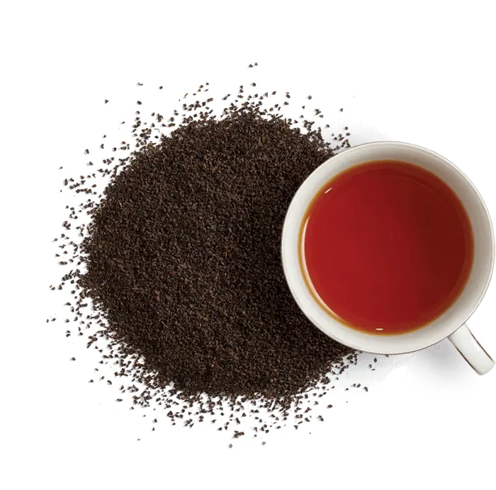
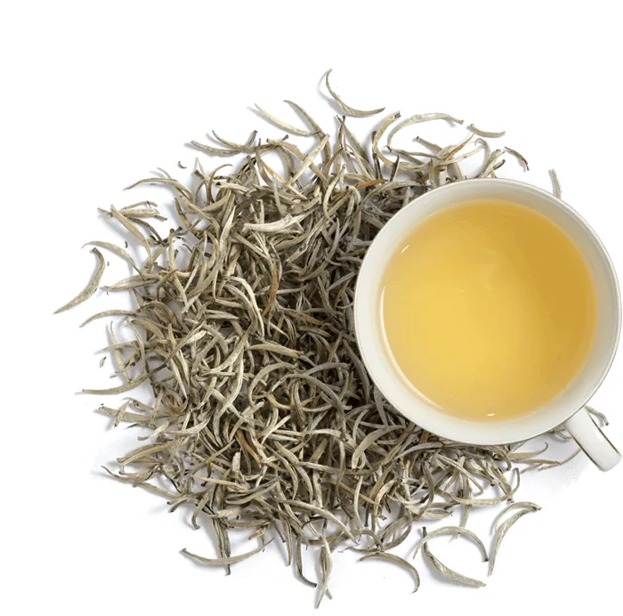
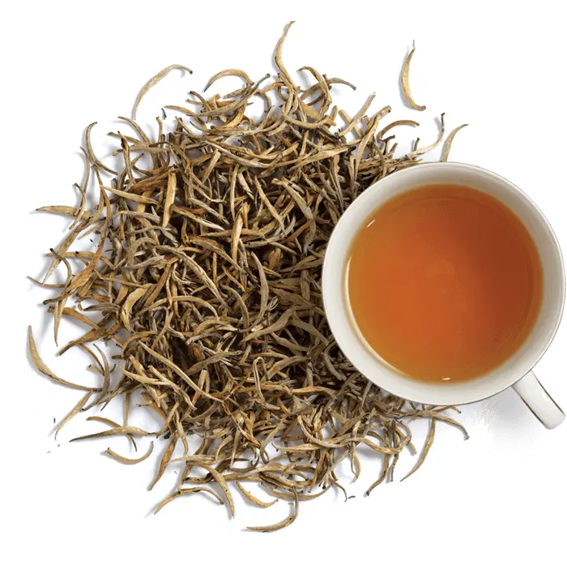

Sri Lanka is an island made for tea. The country produces tea throughout the year and the total tea production is about 340 million kilograms per annum.
Sri Lanka’s tea-growing areas are mainly concentrated in the central highlands and southern inland areas of the island.
The areas are divided into seven main regions based mainly on the terroir, namely Nuwara Eliya, Uda Pussellawa, Uva, Dimbula, Kandy, Sabaragamuwa, and Ruhuna.
Each area produces a uniquely flavoured Ceylon Tea, mainly due to the contrasting elevation, climate, and terrain in each region.
From the mist wrapped mountains of Nuwara Eliya that rise from the centre of the island to soar over 6000 feet above sea level, where the morning air is cool and bracing and the nights cold and touched with frost, come the lightest and the most refined tea to fill the connoisseurs’ cup. Nuwara Eliya is the champagne province of the country’s tea lands with flowery pekoes that are best imbibed light.Sought after grades include whole-leaf Orange Pekoe (OP) and Broken Orange Pekoe (BOP).
This region is twice blessed. It’s blessed during the months of June and September when the southwest monsoon arrives; a cold and dry spell to spur the tea bush to sprout the leaves that will produce a medium-bodied rosy tea graced with subtle character. Then it’s blessed again between November and January when the northeast monsoon’s yearly visitation brings rain in its wake and makes the tea darker in colour and stronger in flavour, adding more tang.
It is cool and dry between December and March and then the heavens open up to send in the rains between May and September. Two different climates within each year dictate Dimbula’s tea produce; a host of natural flavours with a hint of jasmine spiced with cypress. The tea when brewed displays a hue of a reddish, golden orange. And when tasted, it’s surprising to find a taste refreshingly mellow. Defined as ‘high grown’ tea, it is probably, the most famous Ceylon Tea of all.
It’s the climate that makes Uva tea highly prized. The mountainous terrain is exposed to both monsoon seasons; the annual northeast and the southwest monsoons. But when the winds reach these climes and howl around its high towers, they blow bereft of moisture – a spent force which had discharged its water content in the hills below. The dryness gives Uva tea a special concentrated aroma and a distinct exotic flavour.
This mid country tea grown at 2,000 to 4,000 feet above sea level produces robust, full-bodied teas. Ideal for those who love their tea strong, bursting with flavour: the perfect wake-up tea for winter mornings, or when the heart needs a perky sprint.
Rained on by the southwest monsoon, warmed by the tropic sun, the island’s low lying area’s tea have continuously showed their colours by producing leaves with a distinct blackness which imparts a strong and rich taste to rival the best the rest of Lanka can offer. From the south comes a tea full-bodied in its timbre with its flavour vibrant and strong.
| Type Of Plantation | Type of Tea | Image | Exported to : |
|---|---|---|---|
| High Altitude Tea | Broken Orange Pekoe |  | Europian Union |
| Mid Altitude Tea | Silver Tips |  | Iraq |
| Low Altitude Tea | Golden Tips |  | China |